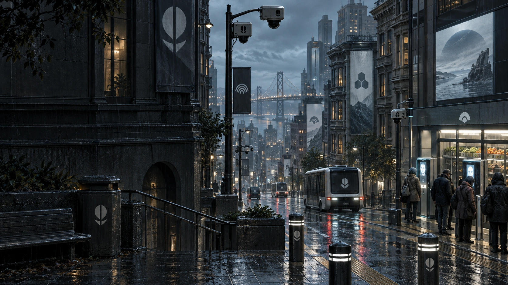

The cage
Company contracts are the only work close to covering life. Leave without clearance, and household debt becomes a return order.
KING MADE / WORLD & IDENTITY / 02

A family. An old van. A forbidden broadcast.
A modern survival trail toward an analog life.

THE STORY / SAN FRANCISCO, 2041
Nine corporations run the systems you need to live. Different logos. The same account.
The rent rises. The food gets dearer. Taxes and mandatory charges eat the rest. Your door, your job, your medicine: another screen, another camera, another permission.
Jack comes home, but his attention stays at work. He checks another alert. Sarah repeats herself. Annie waits with a drawing. He wants a simpler life. Neither parent believes one is still possible.
Company contracts are the only work close to covering life. Leave without clearance, and household debt becomes a return order.
Bea smuggles in an analog radio. After midnight, Ben finds a voice talking about a place called Signals End.
Three nights of arguments. Then Core fires Jack, the joint wallet freezes, and their staff-flat deadline comes before an appeal. Load the van. Ask Bea. Follow the evidence east.
THE DISCOVERY
“What if he’s
telling the truth?”
Ben only wanted to see what the dial could find. Jack hears a chance to get his life back. Sarah wants to believe it and is furious that they have to risk so much to find out.
They are curious, angry, frightened and tempted. Sometimes all at once. “Bea first,” Sarah says. “We ask her in person.”
THE ANTAGONISTS
They compete for your money and cooperate over your obedience. Open an organization to see how its power shows up on the road.
These are fictional organizations. San Francisco is their showcase; headquarters and major operating centers crowd the city. Outside it, coverage fails, contracts conflict and people still find ways to help.
THE DESTINATION / STORY SPOILERS
No phones. No computers.
No digital products. Even for the people in charge.
Signals End is a guarded reservoir basin in the Ozarks. Electricity, analog radio and mechanical engines remain. The work is real. So is the end of the working day.
Reservoir crews, farmers and repairers kept essential water and power running when the service companies withdrew. Their council refused the takeover. Outsiders call it a shadow government.
Water, terrain, guarded approaches and outside dependence on its infrastructure protect the basin. There is no invisible force field. Entry depends on capacity, trust and contribution; the rules bind its leaders too.
The Mercers begin with a rumor. A witness, a family reply and a useful act earn a chance to enter. A home makes freedom durable. An evening without compulsory check-ins makes it felt.
THE IDENTITY / HUMAN NATURE
The approved lettering stays. Its warmth, stubborn curves and slight mischief belong to the people trying to get out.


Keep the silhouette. Use the outlined title artwork. Typing the name in the display font is not the same composition.
Give it room. One dot-height of space around the title. A quarter of the compact mark’s height around the symbol.
Stay clear. Title: 180 px minimum. Horizontal: 160 px. Symbol: 24 px; monochrome below 32 px.
TYPE & VOICE
Short, recognizable headings. Plain language. A joke from a person, never a paragraph from a brand.
You’ve accepted enough terms.
Aa Bb Cc Dd Ee Ff Gg Hh Ii Jj Kk Ll Mm
Nn Oo Pp Qq Rr Ss Tt Uu Vv Ww Xx Yy Zz
0123456789 & ? !
Short headings, 26 px and up. A custom Fraunces derivative; licensed source and modifications included.
ATKINSON HYPERLEGIBLE NEXT
Jack calls that a warranty. Sarah asks which century it expires in.
The van is running. You have food for a day and a name written on paper. Nobody promised this would work.
0 O / 1 I l / 5 S / 8 B
Story and choices: 16–19 px. Supporting text: 14 px. Short labels: 12 px minimum. Film captions: Atkinson 600. Reserve the wordmark for the final title.
INVITATIONLeave the digital world behind.
ATTITUDEA van too old to snitch.
REWARDThe evening belongs to you.
THE PALETTE
#17282B#0C171B#F1EADB#9CAA77#C88068#D0B479Paper on Ink: . Ink on Sage: . Danger always gets a label or symbol as well as a color.
THE ART LIBRARY
Candid people. Credible machinery. Space for fear, uncertainty and wonder. Open any piece to inspect the source without stretching it.
People, not portraits. One action. One or two characters. Different eyelines and emotions. No repeated perfect-family pose.
Machines that make sense. One hand doing one job. Physical controls. Real door seams and believable tools. No grille on the van’s side.
Dark, not indistinct. Keep material edges and faces legible. Atmosphere belongs in depth; blur is not a substitute for detail.
CAMPAIGN APPLICATIONS
TITLE MOTION
A restrained fade and settle. No glitch effect. No constant loop.
2.5 seconds · 1920 × 1080 · silent.
The game’s separate 116-second story film uses Atkinson captions and the approved title.
Export dimensions describe the finished layout, not newly invented image detail. Illustration masters are 1672 × 941. Large exports reserve native-scale space for art and render the title and text directly at output size. These are campaign pieces; gameplay screenshots are still needed for store listings.
BRAND KIT / EDITION 02
The approved identity, the current story, and the files to keep both consistent.
Vector masters, transparent PNGs, licensed fonts, palette, editable layouts, source illustrations, story reference, title motion and visual guide.

{kind=link}
{kind=link}
{kind=link}